Índice
Relatório Resumido da Licitação 13
Licitações liberadas na web 17
Emite Autorização de Empenho 18
Fornecedores empatados e cotações ME/EPP 19
Configuração da Numeração Geral 19
MODULO LICITAÇÕES
Neste cadastro são inseridos no sistema os tipos de modalidades de licitações, tais como: tomada de preço, carta convite, concorrência, etc.
O processo de inclusão das modalidades licitatórios abrange duas abas: modalidades e numeração.
A figura 1 traz a aba Modalidades:
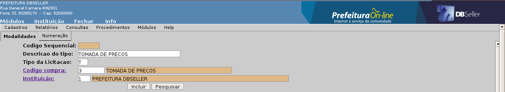
Figura
1
Nesta aba tem-se:
Código sequencial: código sequencial criado pelo sistema;
Descrição do tipo: nome da modalidade licitatória;
Tipo da Licitação: nome abreviado da modalidade licitatória;
Código da compra: tipo de compra na qual a modalidade ficará vinculada;
Instituição: Instituição que utilizará a modalidade cadastrada.
Confirma-se a primeira parte do cadastro de modalidades clicando no botão incluir.
A figura 2 traz a aba Numeração.
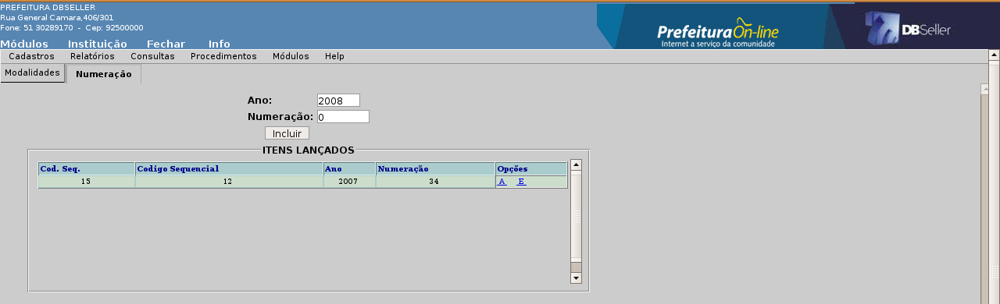
Figura
2
Nesta tela deve-se informar:
Ano: ano do exercício
Numeração: número inicial da licitação na modalidade cadastrada. Nos casos de implantação do sistema após o início do exercício, deve-se cadastrar o número da última licitação realizada nesta modalidade.
As alterações na numeração são permitidas, desde que não haja para a numeração informada uma licitação incluída no sistema.
A exclusão de uma modalidade somente será permitida nos casos em que não há nenhuma licitação incluída no sistema.
Cadastro no qual serão incluídos os locais onde se realizarão os certames licitatórios.
A figura 3 traz a tela de inclusão de locais de licitação.
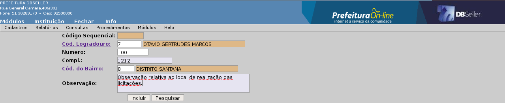
Figura
3
Nela tem-se as seguintes informações:
Código sequencial: código sequencial criado pelo sistema;
Código do Logradouro: nome da rua onde serão realizados os certames licitatórios. Caso desconheça o código, poderá o usuário pesquisá-lo no link código do logradouro, sublinhado;
Número: número do local;
Complemento: dados adicinais do endereço;
Código do Bairro: nome do bairro onde se localiza o local cadastrado. Caso desconheça o código, poderá o usuário pesquisá-lo no link código do bairro, sublinhado.
Observação: observação relativa ao local dos certames licitatórios.
Preenchidos os campos, confirma-se a operação ao clicar no botão incluir.
As alterações somente serão permitidas caso o local cadastrado não esteja vinculado a nenhuma licitação incluída no sistema.
As exclusões somente serão permitidas caso o local cadastrado não esteja vinculado a nenhuma licitação incluída no sistema.
Procedimento que permite a inclusão das comissões de licitações no sistema.
Este cadastro possui duas abas: comissão e participantes.
A figura 4 traz a aba Comissão.
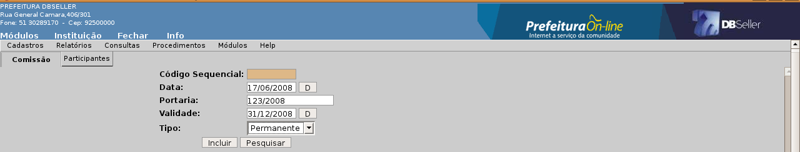
Figura
4
Nela tem-se:
Código sequencial: código criado pelo sistema;
Data: data da inclusão da comissão no sistema;
Portaria: portaria que deu origem a comissão licitatória;
Validade: data de validade da comissão cadastrada;
Tipo: tipo de comissão criada. As comissões poderão ser permanentes ou especiais, cabendo a administração pública defini-las através das portarias publicadas.
Confirma-se a primeira parte da inclusão clicando no botão incluir.
A aba Participantes esta representada na figura 5:
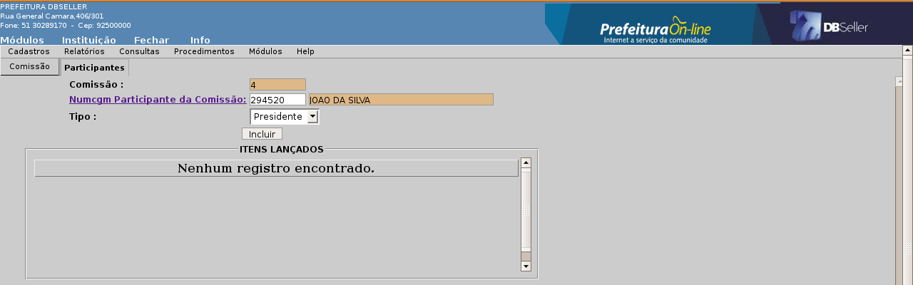
Figura
5
Esta tela possui as seguintes dados:
Comissão: número criado pelo sistema;
Numcgm participante da comissão: número do cgm do participante. Caso desconheça o número, poderá optar em pesquisá-lo no link numcgm participante da comissão, sublinhado.
Tipo: tipo de participante da comissão. Por convenção, o primeiro nome cadastrado será o presidente da comissão, sendo os demais considerados participantes.
Para confirmar a inclusão de um membro da comissão deve-se clicar no botão incluir.
Por fim, pode-se alterar ou excluir um membro da comissão. Para isso, deve o usuário clicar nos liks A e E, sublinhados.
A exclusão somente será permitida se a comissão cadastrada no sistema não estiver vinculada a uma licitação.
É o cadastro dos fornecedores de materiais e/ou serviços da administração pública.
Este cadastro envolve 5 abas: fornecedor, contas banco, movimento, subgrupo e representantes legais.
A figura 6 traz a aba fornecedores:
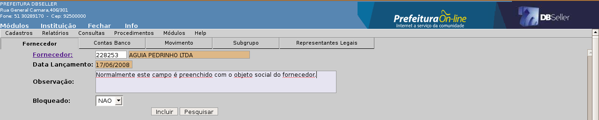
Figura
6
Nesta aba tem-se:
Fornecedor: a identificação do fornecedor será feita através do número do cgm. Caso desconheça o número do cgm, poderá o usuário optar pela pesquisa no link fornecedor, sublinhado;
Data do Lançamento: data que o usuário está cadastrando o fornecedor;
Observação: utilizado normalmente para indicar o objeto social da empresa que se está cadastrando;
Bloqueado: determina se o fornecedor pode ou não fornecer materiais/serviços a administração pública. Assim, se o campo chamado estiver cetado como “não”, significa que a administração poderá solicitar materiais ou serviços a este fornecedor.
Preenchida esta aba deve o usuário confirmar o cadastro através do botão incluir.
A figura 7 mostra a aba contas.
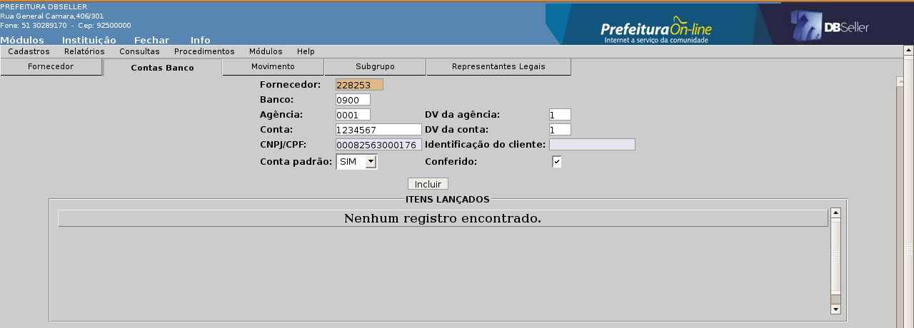
Figura 7
Esta aba contém as seguintes informações:
Fornecedor: número do cgm do fornecedor;
Banco: número do banco do fornecedor;
Agência: agência do banco do fornecedor;
DV da agência: digito verificador da agência;
Conta: número da conta corrente do fornecedor;
DV da conta: digito verificador da conta corrente do fornecedor;
CNPJ/CPF: cnpj ou cpf do fornecedor;
Identificação do cliente: campo de livre digitação, destinado a imprimir no verso de um cheque que será emitido em favor do fornecedor no momento de sua emissão através das rotinas da agenda de pagamentos.
Conta padrão: é a conta padrão do fornecedor. Em havendo mais de uma conta, deve o fornecedor indicar uma conta padrão para administração pública.
Conferido: o preenchimento deste campo atesta que todos os dados bancários cadastrados para o fornecedor foram devidamente revisados e estão corretos. Assim, estas informações estarão identificadas nas rotinas da agenda de pagamentos para que o usuário saiba que não necessita revisar o cadastro do fornecedor.
Ao usuário cabe informar os dados bancários do fornecedor, bem como seu CNPJ/CPF e a conta padrão que será utilizada para este fornecedor.
Nesta aba pode-se cadastrar quantas contas bancárias possuir o fornecedor, determinando, porém, uma única conta padrão para o mesmo.
A terceira aba representada na figura 8 abaixo denomina-se Movimento.
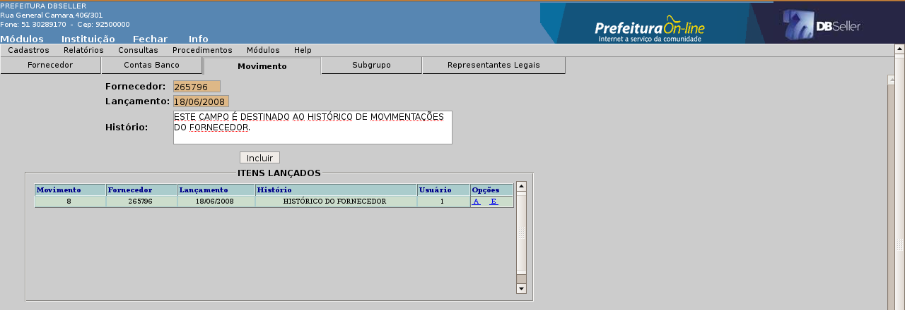
Figura 8
Esta aba contém:
Fornecedor: número do cgm do fornecedor;
Lançamento: data da inclusão do cadastro do fornecedor no sistema;
Histórico: destinado a registrar o histórico de movimetações de fornecimentos de materiais e/ou serviços pelo fornecedor.
Assim, a aba Movimento serve para a administração pública registrar o histórico dos fornecimentos realizados pelo fornecedor cadastrado. Trata-se de um campo observação, onde o usuário irá registrar o histórico dos fornecimentos realizados.
A figura 9 traz a aba Subgrupo.
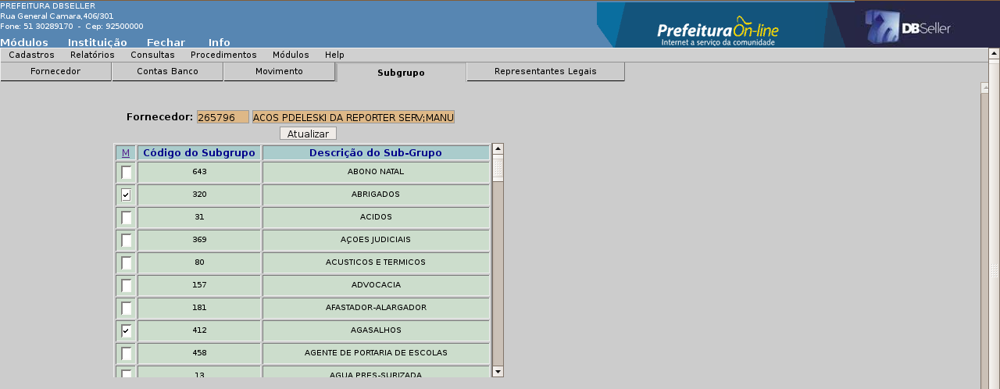
Figura
9
Nesta aba, o usuário irá marcar no checkbox os tipos de produtos oferecidos pelo fornecedor a administração pública.
Por fim, a figura 10 traz a aba Representantes Legais.
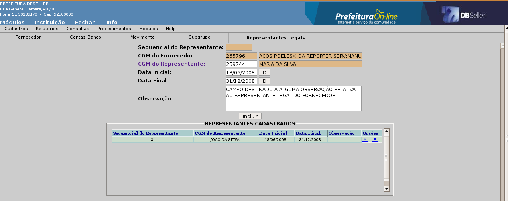
Figura 10
Nesta aba tem-se:
Sequencial do representante: código sequencial criado pelo sistema ao representante legal;
CGM do fornecedor: número do cgm do fornecedor;
Data inicial: data início da representação legal;
Data final: data final da representação legal;
Observação: campo destinado a registrar algum detalhe relevante sobre a representação legal.
Assim, esta aba serve para identificar os representantes legais da empresa cadastrada. Para isso, deverá o(s) representante(s) legal da empresa estar devidamente cadastrado no órgão da administração pública, ou seja, possuir um código de cgm.
Por fim, poderá o usuário alterar o cadastro realizado clicando no sub menu “alteração”.
É vedada sua exclusão caso já se tenha emitido algum certificado ao fornecedor cadastrado.
Este cadastro encontra-se fixo no programa. Nele, estão definidos os tipos de empresas que se enquadram na Lei da micro e pequenas empresas, bem como as demais não contempladas na referida Lei.
Ao usuário será permitido definir o intervalo percentual superior a melhor cotação, sobre as quais as micros e pequenas empresas poderão apresentar novas propostas. Para alterar o percentual, basta clicar no valor percentual contido na figura acima. Feito isso, será possível informar ao sistema o valor percentual a ser utilizado num determinado certame licitatório.
Relatório que traz todas as informações relativas a uma determinada licitação ou licitações.
A figura 11 representa a tela de seleção de filtros para emissão do relatório de licitação.
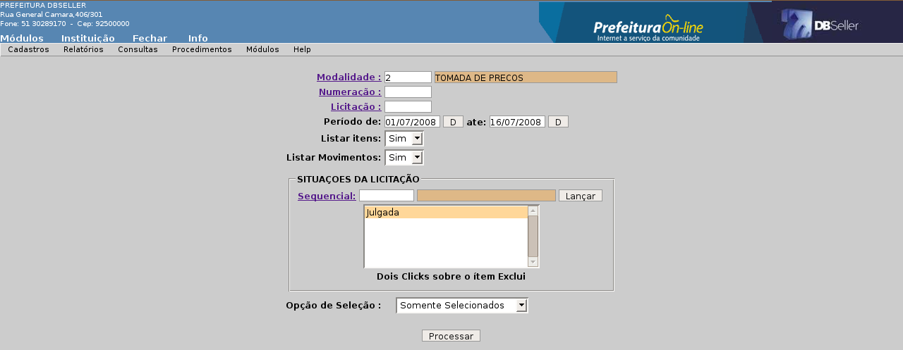
Figura
11
Modalidade: traz as modalidades de licitações cadastradas no sistema, tais como: carta convite, pregão, tomada de preço, etc;
Numeração: traz todas as licitações cadastradas na modalidade indicada no campo de mesmo nome. Assim, o campo numeração é dependente do campo modalidade;
Licitação: lista todas as licitações cadastradas no sistema;
Período: permite listar licitações contidas num determinado período de tempo;
Listar itens: possibilita listar todos os materiais/serviços contidos nas licitações geradas no relatório;
Listar movimentos: lista de forma genérica as movimentações de uma licitação, quais sejam: em andamento, revogada e julgada.
Situações da licitação: permite listar somente as licitações de um determinado tipo de movimento, ou seja, poderá o usuário escolher em listar somente as licitações em andamento ou aquelas que já estejam julgadas.
Opção de seleção: possui ligação direta com as situações da licitação. Assim, estando esta opção em “somente selecionadas”, as licitações a serem listadas serão aquelas que possuem o(s) tipo(s) de movimento(s) listados na caixa situações da licitação. Ao contrário, estando em “menos os selecionados” as licitações a serem listados serão aquelas que não se encontram na caixa de seleção.
No exemplo da figura acima, se quer emitir as licitações da modalidade tomada de preços realizadas entre os dias 01 e 16/07/2008, bem como a lista de todos os itens contidos nestas licitações e os movimentos realizados na mesma. Por fim, somente se quer a listagem daquelas licitações que se encontram julgadas.
A figura 12 mostra o resultado do que se buscou nos filtros de emissão do relatório de licitação.
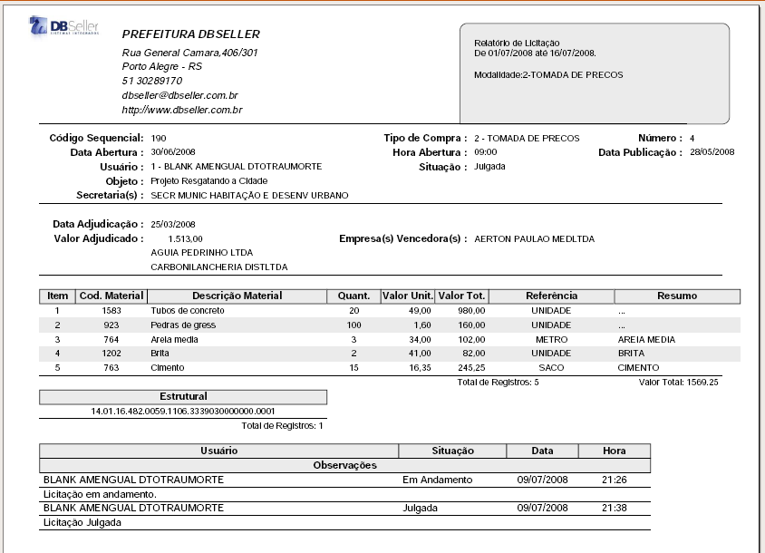
Figura 12
Relatório que traz informações resumidas do processo licitatório
Gera o mapa das cotações finais realizadas por cada um dos fornecedores, mostrando valores unitários e total, bem como traz as justificativas para anulação de lotes/itens, troca de fornecedores e desclassificação de itens para fornecedores.
A figura 13 mostra o conjunto de filtros para emissão deste relatório.
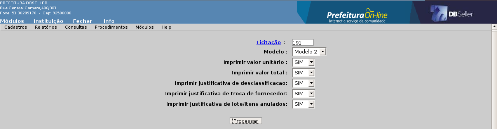
Figura 13
Licitação: número sequencial da licitação que se quer imprimir o mapa;
Modelo: modelo de relatório que será impresso. Hoje, o modelo 1 se encontra em desuso;
Imprimir valor unitário: permite imprimir o valor unitário de cada um dos materiais/serviços de uma licitação;
Imprimir valor total: permite imprimir o valor total de cada um dos materiais/serviços de uma licitação;
Imprimir justificativa de desclassificação: traz a(s) justificativa(s) das desclassificações realizadas durante o certame licitatório;
Imprimir justificativa de troca de fornecedores: traz a(s) justificativa(s) das trocas de fornecedores que se fizerem necessárias durante o certame licitatório;
Imprimir justificativa de lote/itens anulados: traz a(s) justificativa(s) da anulação dos lote/itens de um certame licitatório.
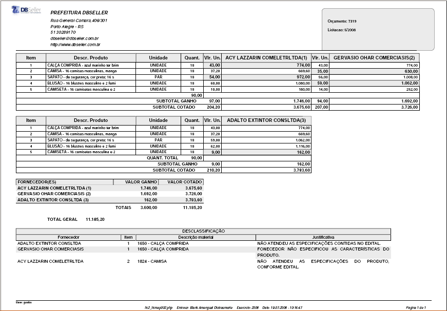
A
figura 14 mostra o relatório do mapa das propostas de um
determinado certame licitatório.
Figura 14
Procedimento que lista em TXT todos os materiais/serviços de uma licitação. Visa facilitar a elaboração do edital, uma vez que este texto poderá ser importado para uma planilha ou editor de texto e posteriormente inserido no edital licitatório.
A figura 15 traz o texto TXT de uma determinada licitação.
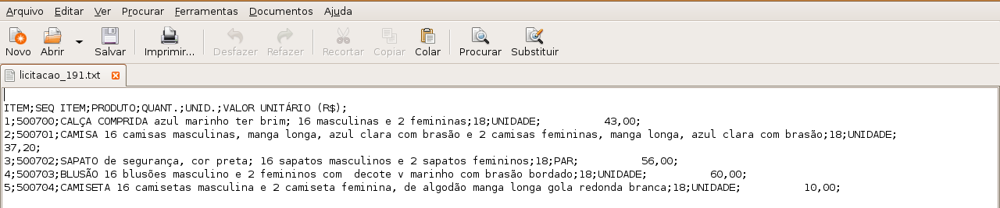
Figura
15
Este texto traz 2 (dois) códigos sequenciais. O primeiro, se refere ao código sequencial do item na licitação que se está realizando, o segundo, ao código sequencial do item em todas as licitações já realizadas. Mostra ainda, a descrição do material/serviço, a quantidade e unidade requerida, e o valor unitário sugerido para cada um dos materiais/serviços.
Documento de homologação de julgamento realizado pela comissão de licitação.
A figura 16 mostra um modelo de documento de homologação.
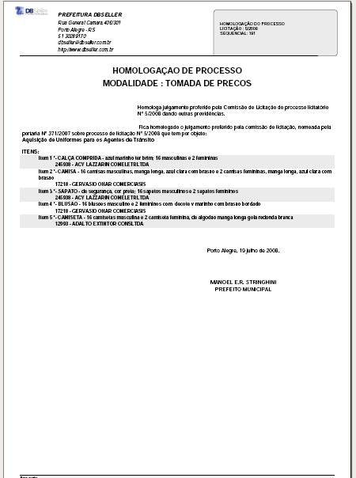
Figura
16
O texto contido neste documento poderá ser modificado. Isto é feito no módulo configuração do sistema, através da criação de um documento/parágrafo a partir de um documento padrão existente neste mesmo módulo. O procedimento é melhor detalhado no manual de configuração do sistema.
Documento de adjudicação de julgamento realizado pela comissão de licitação.
A figura 17 mostra um modelo de documento de adjudicação.
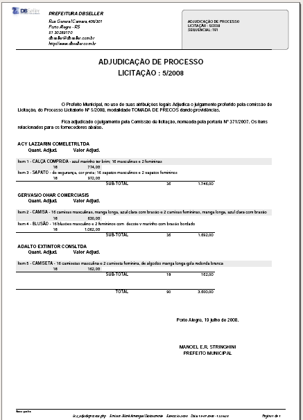
Figura
17
O texto contido neste documento poderá ser modificado. Isto é feito no módulo configuração do sistema, através da criação de um documento/parágrafo a partir de um documento padrão existente neste mesmo módulo. O procedimento é melhor detalhado no manual de configuração do sistema.
Lista licitações publicadas no DBPref.
Lista os fornecedores que realizaram donwload dos editais publicados no DBPref.
Relatório que serve para reemitir autorizações de empenho. A figura 18 traz os filtros para reemissão de autorização(ções).
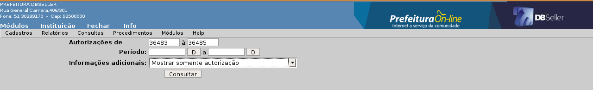
Figura
18
Elas poderão ser reemitidas num intervalo de autorizações, bem como num intervalo de tempo mensurado por data. As informações adicionais servem para o usuário escolher se quer que o relatório informe o processo de compra vinculado a(s) autorização(ções) a ser(em) impressa(s), escolhendo a opção mostrar autorização de processo de compras, ou optar em não mostrar o processo de compras a ela(s) vinculado(s), escolhendo a opção mostrar somente autorização.
Este relatório é melhor detalhado no módulo empenho do sistema.
Relatório que lista a situação de um determinado certame licitatório. Assim, será possível saber-se qual a situação de uma licitação num determinado momento. Vale lembrar, que no sistema definiu-se 3(três) situações distintas, quais sejam: licitação em andamento, julgada ou revogada.
A figura 19 mostra os filtros deste relatório.
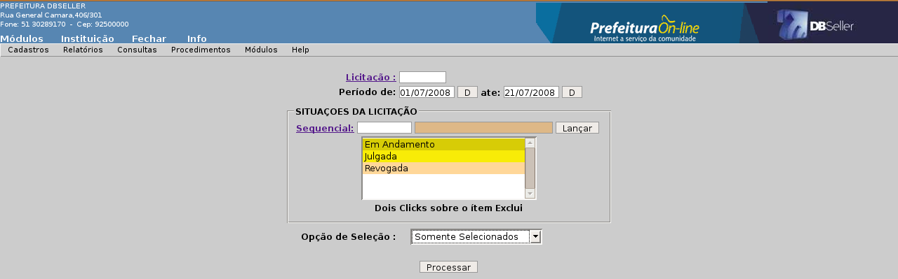
Figura
19
Licitação: pode o usuário indicar o número sequencial de uma licitação. Caso desconheça o código poderá optar em pesquisá-lo clicando no link licitação, sublinhado;
Período: não escolhendo uma licitação em específico, poderá indicar um período mensurado por data;
Situações da licitação: pode o usuário determinar qual situação quer seja impressa no relatório (licitações em andamento, julgada ou revogada);
Opção de seleção: somente selecionados trará as situações das licitações indicados na caixa de seleção.
Este relatório possui informações relativas as cotações iguais entre fornecedores, bem como a relação destas cotações com as micro e pequenas empresas.
Permite consultar licitações.
Permite consultar os fornecedores que realizaram o download no DBPref.
Esta configuração controla os números sequenciais das modalidades de licitações que não possuem controle de numeração.
Para facilitar o entendimento, vejamos a exemplo abaixo:
Modalidades cadastradas: carta convite e tomada de preços. A carta convite possui controle de numeração em seu cadastro, logo, seguirá a sequencial desta numeração. Já a tomada de preços não possui tal controle, então o sistema irá utilizar o sequencial da numeração geral.
A figura 20 traz a tela de configuração geral.
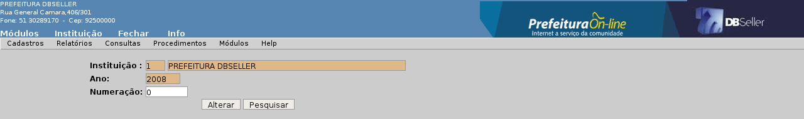
Figura
20
Nesta tela cabe ao usuário informar o número sequencial no campo numeração. Vale lembrar que este número será zero quando do início do exercício. Na implantação do sistema poderá ser zero ou será o número da última licitação realizada antes do processo de implantação.
Procedimento que libera o edital para ser disponibilizado no DBPref.
Procedimento de inclusão do edital para ser liberado para download no DBPref.
Para alterar basta clicar no sub menu “alteração”.
Para excluir basta clicar no sub menu “exclusão”. Somente será permitada exclusão caso nenhum donwload tenha sido realizado no DBPref.
Procedimento destinado a cadastrar as licitações realizadas pela administração pública.
A inclusão de uma licitação no sistema envolve o preenchimento das seguintes abas: licitação, itens e lotes.
A figura 21 traz a aba licitação.
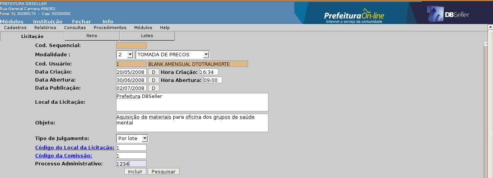
Figura
21
Esta aba contém:
Código sequencial: código sequencial criado pelo sistema. Esse código não se confunde com a numeração geral e com a numeração controlada por modalidades;
Modalidade: modalidade licitatório a ser escolhida pelo usuário;
Código do usuário: sistema traz código do usuário que está incluindo uma licitação no sistema;
Data da criação: data da inclusão da licitação no sistema;
Hora da criação: sistema registra a hora da inclusão da licitação no sistema;
Data de abertura: data da realização do certame licitatório, comumente denominado data da abertura dos envelopes;
Hora abertura: campo destinado a informar a hora que se realizará o certame licitatório;
Data da publicação: data da publicação do edital;
Local da licitação: usuário de informar o local da licitação;
Objeto: é o objeto da licitação;
Tipo de julgamento: tipo de julgamento a ser utilizado na licitação;
Código do local da licitação: usuário deve informar o código do local da licitação. Caso desconheça o código, poderá optar em pesquisá-lo no link código do local da licitação.
Código da comissão: usuário deve informar o código da comissão de licitação. Caso desconheça o código, poderá optar em pesquisá-lo no link código da comissão.
Processo administrativo: número do processo administrativo que se originou no departamento responsável pelo cadastro dos processos (o preenchimento deste campo não é obrigatório).
Sobre o tipos de julgamentos de licitações no sistema:
a) Julgamento por Item:
Neste tipo de julgamento o sistema irá analisar as cotações lançadas pelos fornecedores a cada um dos itens contidos na licitação. Feito isso, o julgamento se dará pelo menor preço.
Desta forma, cada item será julgado isoladamente, sendo declarado vencedor aquela fornecedor que possuir a menor cotação.
Em caso de empate entre fornecedores, o sistema trará como vencedor, por convenção, aquele que foi primeiramente cadastrado na licitação que se está realizando.
Vale lembrar que o critério de desempate será definido no edital, sendo o critério utilizado pelo sistema uma mera convenção.
b) Julgamento Global:
O critério utilizado no julgamento global leva em consideração os valores totais cotados por cada um dos fornecedores. Assim, será declarado vencedor aquele que cotar o menor valor global.
Cumpre esclarecer que o fornecedor somente participará do julgamento, caso tenha cotado valores para todos os itens contidos na licitação. Deixando de cotar será desclassificado do certame.
c) Julgamento por Lote:
Neste processo o sistema irá analisar cada um dos lotes criados na licitação, procedendo o julgamento dos mesmos de forma isolada.
Assim, será declarado vencedor de um determinado lote aquele fornecedor que cotou o menor preço para o lote que se está julgando.
Cumpre esclarecer que o fornecedor somente participará do julgamento, caso tenha cotado valores para todos os itens contidos no lote. Deixando de cotar será desclassificado do certame.
Preenchidos os campos, confirma-se a inclusão da licitação clicando no botão incuir.
A seguir tem-se a aba itens.
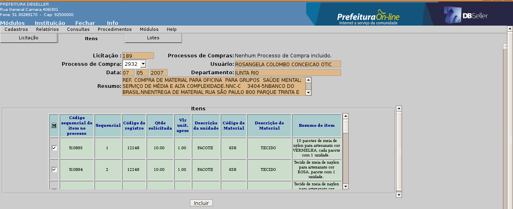
Figura
22
A aba itens contém:
Licitação: código sequencial criado pelo sistema. Esse código não se confunde com a numeração geral e com a numeração controlada por modalidades;
Processsos de compras: mostra o processo(s) de compra(a) vinculado a licitação.
Processo de compra: nesta caixa de seleção deve o usuário escolher qual(ais) processo(s) de compras quer incluir na licitação;
Usuário: sistema mostra o usuário que está incluindo a licitação;
Data: data da inclusão do processo de compras na licitação;
Departamento: sistema mostra o departamento origem do processo de compras;
Resumo: resumo oriundo da solicitação de compras;
Itens: itens do processo de compras.
Importante destacar que uma licitação poderá ter um ou mais processos de compras.
Nesta aba caberá ao usuário, além de escolher o(s) processo(s) de compras, marcar no checkbox da tabela itens, quais itens do processo de compras indicado farão parte da licitação que se está incluíndo no sistema.
Usualmente todos os itens de um processo de compras são incluídos numa licitação. Para estes casos, basta o usuário clicar no campo contido na tabela itens, a letra M, sublinhada, que todos os itens estarão selecionados.
Encerra-se o procedimento de inclusão de processo(s) de compras numa licitação clicando no botão incluir.
Por fim, tem-se a aba lote, que somente será utilizada quando o tipo de julgamento da licitação for por lote.
A figura 23 representa a aba lote.
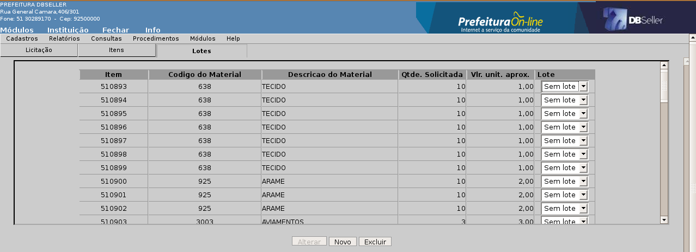
Figura
23
Esta tela apresenta todos os itens contidos no(s) processo(s) de compras incluído(s) numa determinada licitação.
Ao usuário cabe escolher qual(ais) item(ns) formará(ão) um lote. Para formar os lotes deve-se inicialmente clicar no botão novo.
A figura a seguir mostra a tela que se apresentará ao usuário após realizar o procedimento acima descrito.
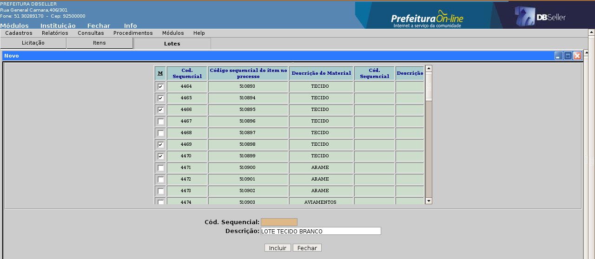
Figura 24
Neste tela deve-se marcar cada item que formará um lote. Feito isso, deve o usuário descrever o nome do lote. Caso não informe nenhum nome, o sistema dará um nome fictício ao mesmo.
Confirma-se a criação de um lote através do botão incluir.
Vale lembrar que esta aba somente deverá ser preenchida quando o julgamento for por lote.
A alteração de uma licitação do sistema somente será permitida caso esta não esteja julgada.
A exclusão de uma licitação do sistema somente será permitida caso esta não esteja julgada.
Detalhe importante a ser destacado neste momento versa sobre a possibilidade de anulação de itens contidos no(s) processo(s) de compras incluído(s) numa determinada licitação. A seguir segue os procedimentos necessários para esta ação.
Rotina que deve ser executada, se necessário, após a inclusão do(s) processo(s) de compras numa determinada licitação.
A figura 25 traz a tela de anulação de itens num certame licitatório.
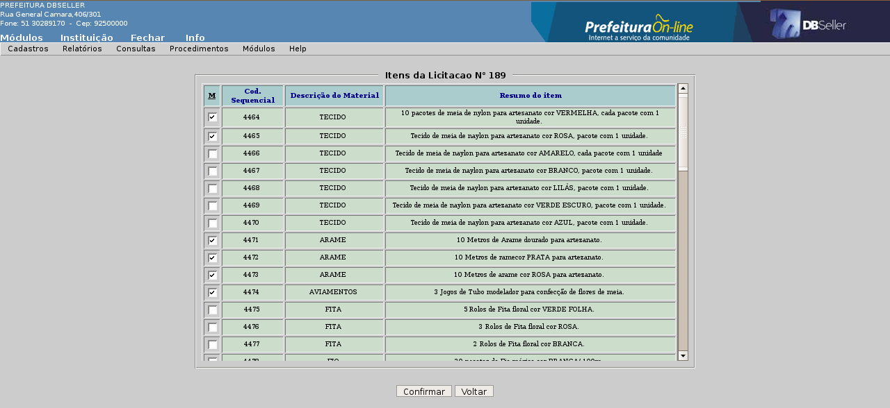
Figura 25
Nela tem-se todos os materiais contidos no(s) processo(s) de compras incluído(s) numa licitação. Ao usuário basta marcar no checkboox o(s) material(ais) que quer excluir do certame licitatório, clicando, logo a seguir, no botão confirmar.
Feito isso, a tela da figura 26 apresentará.
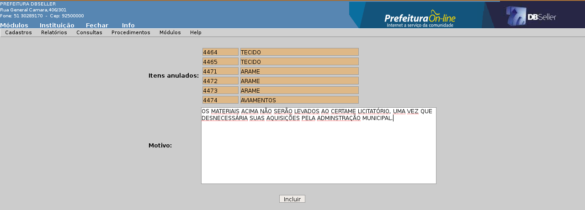
Figura
26
Como se verifica, nela estão listados todos os materiais que não farão parte do certame, devendo o usuário justificar a anulação dos mesmos na licitação que se está incluindo no sistema.
Encerra-se o processo clicando no botão incluir.
Verificado um equívoco na anulação de um ou mais materiais, tem o usuário a possibilidade de correção através da rotina cancelar anulação de itens.
Para isso, deve inicialmente informar ao sistema o número sequencial da licitação. Caso desconheça o número da licitação, poderá optar em pesquisá-la clicando no link licitação, sublinhado.
A figura 27 traz a tela cancelar anulação.
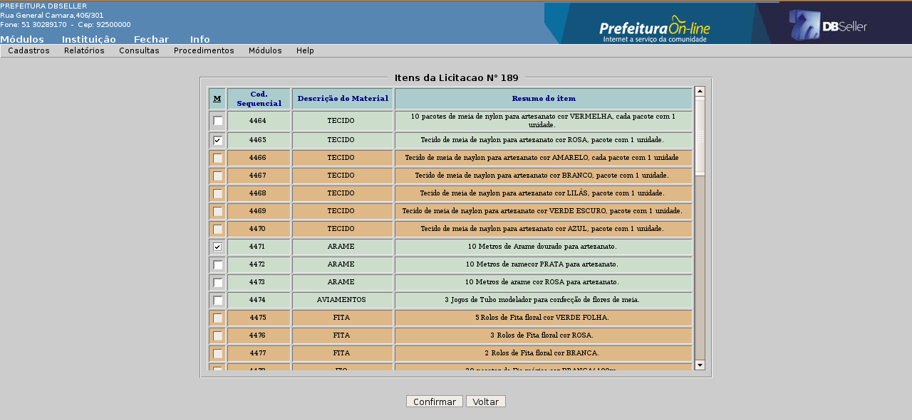
Figura
27
Nela os materiais nas cores claras representam os materiais que foram anulados do certame licitatório. Deve o usuário marcar no checkbox os materiais que deseja cancelar a anulação.
Feito isso, encerra-se o procedimento clicando no botão confirmar.
Importante ressaltar que as rotinas de anulação e cancelamento de anulação de itens, devem ser realizadas antes de se lançarem no sistema os valores relativos as cotações dos fornecedores (lança valores).
Através deste procedimento serão incluídos no sistema todos os fornecedores participantes de um determinado certame licitatório.
Inicialmente deve o usuário indicar ao sistema qual licitação deseja incluir os fornecedores participantes. Para isso, deve preenher um dos seguintes filtros:
código sequencial da licitação: sequencial criado pelo sistema para cada uma das licitações cadastradas;
numeração: número sequencial da modalidade licitatória;
descrição do tipo: refere-se a modalidade licitatória.
Caso desconheça os códigos, poderá optar em pesquisar a licitação na tabela contida neste procedimento.
Escolhida a licitação, o sistema trará a tela representada na figura 28:
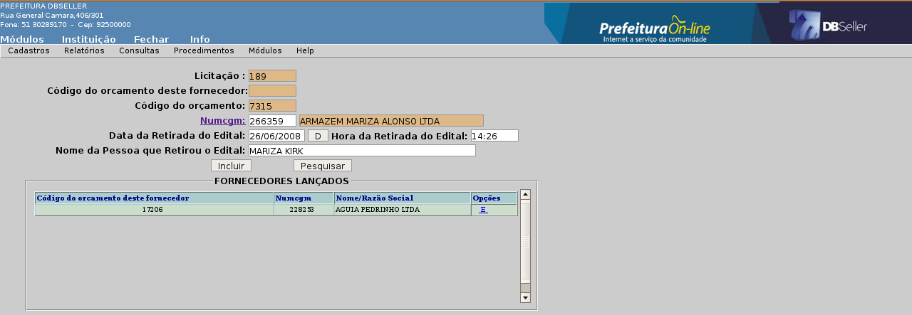
Figura 28
Através desta tela é feita a inclusão dos fornecedores que irão participar do certame licitatório. Nela tem-se:
Licitação: código sequencial da licitação criado pelo sistema;
Código do orçamento deste fornecedor: código do orçamento criado pelo sistema ao fornecedor que se está incluindo;
Código do orçamento: código do orçamento da licitação;
Numcgm: número do cgm do fornecedor;
Data da retirada do edital: dia que foi retirado o edital pelo representante legal do fornecedor;
Hora da retirada do edital: hora que foi retirado o edital pelo representante legal do fornecedor;
Nome da pessoa que retirou o edital: nome do representante legal do fornecedor.
Cabe ao usuário preencher o número do cgm do fornecedor. Caso desconheça o código poderá optar em pesquisá-lo clicando no link Numcgm, sublinhado. Deve informar ainda o dia, hora e nome do representante do fornecedor que procedeu a retirada do edital.
Neste procedimento deve-se incluir todos os fornecedor que irão participar do certame.
Encerra-se o processo de inclusão ao clicar no botão incluir.
Por fim, pode o usuário excluir um ou mais participantes do certame. Para isso, deve clicar no link E, sublinhado, localizado ao lado do nome/razão social do fornecedor.
Nesta rotina são lançadas as cotações de cada um dos fornecedores numa determinada licitação.
As figuras 29 e 30 mostram a tela de inclusão dos valores definitivos cotados por um dos participantes do certame, quando o tipo de julgamento é por lote.
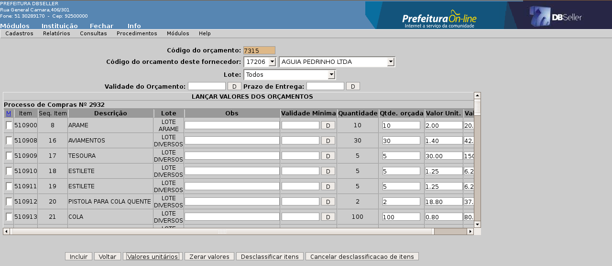
Figura
29
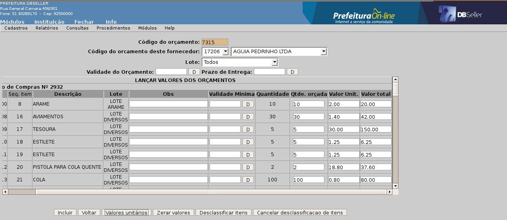
Figura
30
Na tela tem-se as seguintes informações:
Código do orçamento: representa o número do orçamento criado pelo sistema para esta licitação;
Código do orçamento deste fornecedor: representa o número do orçamento criado para aquele fornecedor que se irá lançar valores;
Lote: pode o usuário escolher em lançar valores para um lote em específico ou lançar valores para todos os lotes. Para isso, deve selecionar o nome do lote ou optar por “todos” na caixa de seleção.
Validade do orçamento: data de validade do orçamento;
Prazo de entrega: data de entrega do material ou realização do serviço;
Ao preencher estas informações o usuário irá lançar os valores unitários para cada um dos lotes incluídos na licitação, sendo-lhe opcional informar alguma observação relativa ao material/serviço (geralmente marca do produto) que se esta orçando, bem como informar a data validade do material a ser adquirido (validade mínima).
Cumpre ressaltar que a cada valor unitário informado, o sistema automaticamente trará o valor total do material, bem como o valor total do pedido.
A confirmação do valores orçados se dá através do botão incluir.
Vale lembrar que o sistema irá apresentar automaticamente cada um dos fornecedores e seus materiais/serviços, para que o usuário possa lançar os valores orçados.
Incluir: utilizado para confirmar as cotações lançadas para um determinado fornecedor;
Voltar: possibilita alterar as cotações lançadas para os fornecedores. Utilizada esta opção, deverá o usuário informar novamente o número sequencial da licitação.
Valores unitários: este botão importa (traz), para cada um dos materiais/serviços, o valor unitário lançado no momento da solicitação de compras.
Zerar valores: utilizado para zerar os campos valor unitário e valor total.
Desclassificar itens: utilizado para desclassificar um material/serviço de um determinado fornecedor, que não tenha preenchido as condições estabelecidas no edital licitatório.
Para proceder a desclassificação, deve o usuário inicialmente selecionar o material (ais)/serviço(s) através checkbox localizado ao lado de cada um deles. Pode-se marcar um material/serviço por vez, ou optar em marcar todos os materais/serviços que quer desclassificar.
Feito isso, deve-se clicar no botão desclassificar itens, procedendo, então, a justificativa da desclassificação. O material/serviço desclassificado ficará na cor amarela.
Vale lembrar que sendo o tipo de julgamento por lote, como no nosso exemplo, marcando um material/serviço de um determinado lote, o fornecedor será desclassificado de todo lote.
Cancelar desclassificação de itens: ocorrendo algum equívoco na desclassificação, o sistema permite sua correção através do cancelamento da desclassificação. Para proceder o cancelamento, deve o usuário clicar no botão cancelar desclassificação de itens. A tela trará todos os materiais/serviços desclassificados, cabendo ao usuário escolher qual(ais) material(ais) deseja cancelar a desclassificação. Esse procedimento é feito marcando o checkbox localizado ao lado do material/serviço. Cumpre ressaltar que sendo o julgamento por lote, marcando-se um material/serviço, todo o lote desclassificado ficará habilitado para o fornecedor.
Encerra-se o processo de lançar valores ao se incluir os valores unitários de cada um dos itens, para todos os fornecedores participantes do certame licitatório.
Após lançados os valores unitários de todos os materiais/serviços ou lotes de todos os fornecedores, o botão denominado julgar licitação ficará habilitado para que se proceda o julgamento da licitação.
Julgar licitação: procedimento que permite o julgamento de uma licitação, tendo como critério o menor preço lançado para um material/serviço (julgamento por item), para um conjunto de materiais (julgamento global) ou para um lote (julgamento por lote).
Inicialmente uma tela de conferência do julgamento trará todos os materiais de uma determinada licitação, apresentando informações relativas ao fornecedor, ao próprio material/serviço, a quantidade requerida, o valor unitário e total. No caso de julgamento por lote, trará os materiais/serviços separados por lote.
Estando correto todos os lançamentos, deve o usuário clicar no botão confirmar efetivando, desta forma, o julgamento da licitação propriamente dita. Ao contrário, estando algum lançamento incorreto deve utilizar o botão voltar que o conduzirá novamente a tela de lança valores.
A figura 31 traz o julgamento por lote de uma determinada licitação.
Figura 31
A partir do julgamento da licitação terá o usuário três opções: proceder a autorização de empenho, realizar a troca de fornecedores ou cancelar o julgamento.
Troca de Fornecedor (link trocar):
A troca de fornecedores de uma licitação é feita na tela de julgamento de da mesma. Para realizar este procedimento basta o usuário clicar no link trocar, conforme se verifica na figura acima.
Feito isso, o sistema trará uma tela com os demais fornecedores habilitados para aquele material/serviço ou lote. A figura 32 representa a tela de troca de fornecedores.
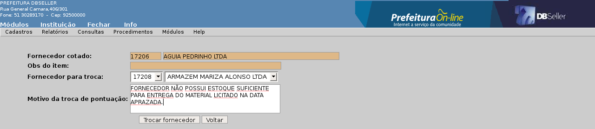
Figura 32
Nesta tela tem-se:
Fornecedor cotado: é o fornecedor que cotou o lance vencedor;
Obs do item: informação oriunda do campo observação do lança valores;
Fornecedor para troca: lista na caixa de seleção, os demais fornecedores habilitados para o material/serviço/lote que se quer proceder a troca;
Motivo da troca de pontuação: campo de preenchimento obrigatório, no qual deve-se informar o motivo da troca entre fornecedores.
Nesta tela deverá o usuário escolher, na caixa de seleção denominada fornecedor, qual fornecedor irá substituir o fornecedor de melhor lance. Feito isso, deverá justificar a troca, no campo chamado motivo da troca de pontuação.
Encerra-se o processo ao clicar no botão trocar fornecedor.
A figura 33 mostra a troca de fornecedor para um lote chamado arame.
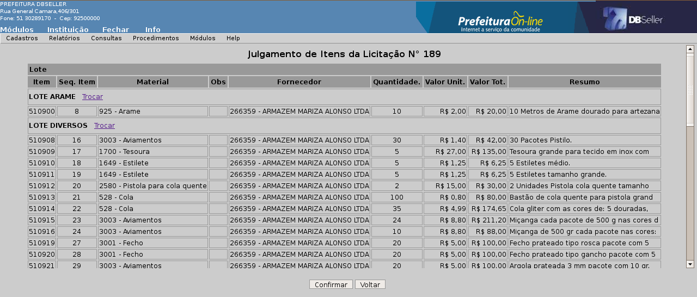
Figura
33
Após conferidas as trocas, deve o usário proceder novamente a confirmação do julgamento. Para isso, deve clicar no botão confirmar.
Rotina utilizada para cancelar o julgamento de um determinado processo licitatório.
Deve o usuário indicar o número sequencial da licitação que deseja cancelar o julgamento. Caso desconheça o número, poderá optar em pesquisá-lo clicando no link licitação sublinhado.
Escolhida a licitação, deve o usuário clicar no botão confirmar. Feito isso, o sistema emite uma mensagem de alerta informando que todos os materiais/serviços julgados e trocados terão seus julgamentos cancelados.
A figura 34 traz a tela de confirmação de cancelamento de julgamento de licitação.
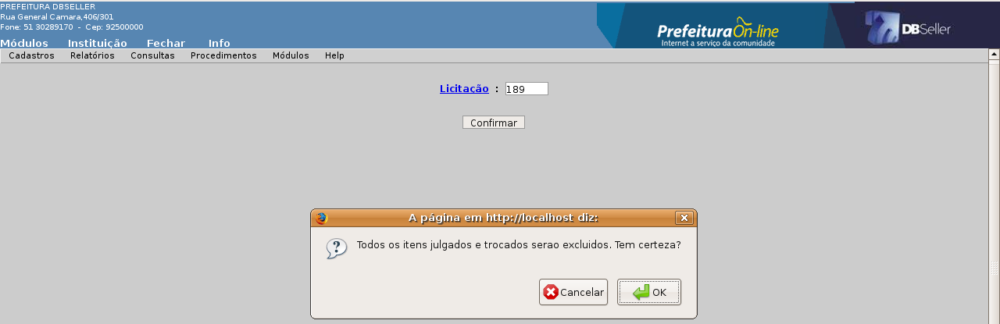
Figura
34
Para confirmar a cancelamento, basta o usuário clicar no botão OK.
Realizado o julgamento, o sistema está apto a gerar a autorização de empenho relativa ao certame licitatório já encerrado.
Assim, deve o usuário informar ao sistema o número sequencial da licitação que irá gerar a(s) respectiva(s) a(s) autorização(ões) de empenho(s).
Informado o número, deve o usuário clicar sobre o botão processar.
Na nova tela representada na figura 35, pode o usuário incluir informações que dizem respeito a(ao):
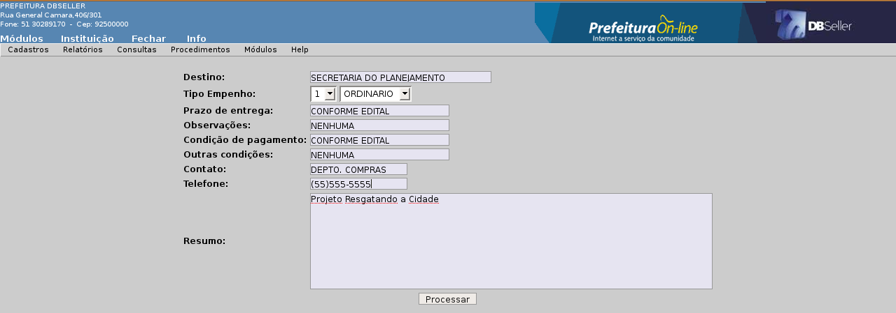
Figura 35
Destino: destino da aquisição ou serviço adquiridos;
Tipo de Empenho: ordinário, global ou estimativa;
Prazo de entrega: determina o prazo de entrega;
Observações: observações que julgar necessárias;
Condição de pagamento: forma e condição de pagamento, se for o caso;
Outras condições: relacionada a forma e condição de pagamento;
Contato: nome e setor da administração;
Telefone: telefone para contato.
Resumo: contém o resumo da solicitação de compras, podendo ser alterado neste momento pelo usuário.
Confirma-se a inclusão destes dados através do botão processar.
Feito isso, o sistema trará a tela de autorizações propriamente, conforme se observa na figura 36.
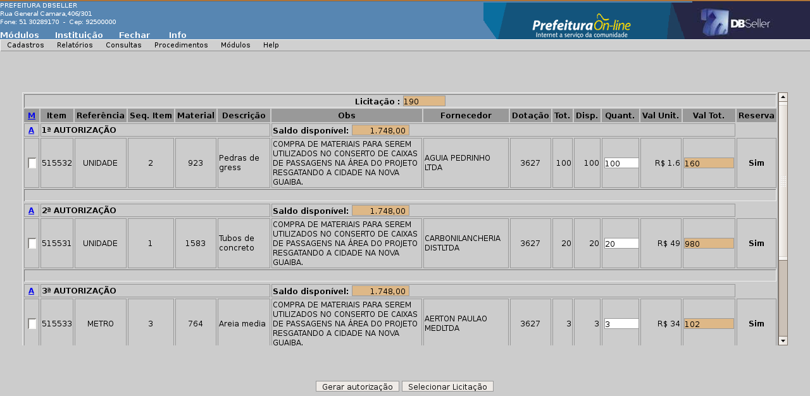
Figura
36
Nesta tela encontram-se todos os dados relativos aos materiais/serviços a serem adquiridos pela administração pública.
Nesta tela deve o usuário selecionar a(s) autorização(ões) empenho(s) que deseja gerar. Para isso, deverá marcar o checkbox contido em cada uma das autorizações.
Importante ressaltar a possibilidade de se alterar a quantidade de material que se irá autorizar a empenho. Como exemplo citamos a pedra de gress contida na figura acima, cuja quantidade é 100. Podemos, num primeiro momento, gerar uma autorização de empenho com a quantidade 50. Para isso, devemos marcar o checkbox do material e alterar o campo quantidade para 50. Feito isso, gera-se a autorização, restando um saldo de 50 para se gerar uma nova autorização de empenho.
Para que a autorização de empenho se efetive, gerando a guia de autorização de empenho no formato pdf, deve clicar no botão gerar autorização.
O botão denominado selecionar licitação serve para se proceder uma nova pesquisa de licitações, para as quais se deseja gerar autorização de empenho.
Por fim, as autorizações não geradas poderão a qualquer momento serem acessadas para liberação de empenho.
As autorizações de empenho normalmente são geradas pelo setor/departamento de compras.
Geradas as autorizações, é possível proceder a anulação das mesmas, caso necessário.
Para isso, deve o usuário informar o número da autorização de empenho que deseja anular. Caso desconheça o número, poderá optar em pesquisá-lo através do link autorização, sublinhado.
A figura 37 traz a tela de anulação de autorização de empenho.
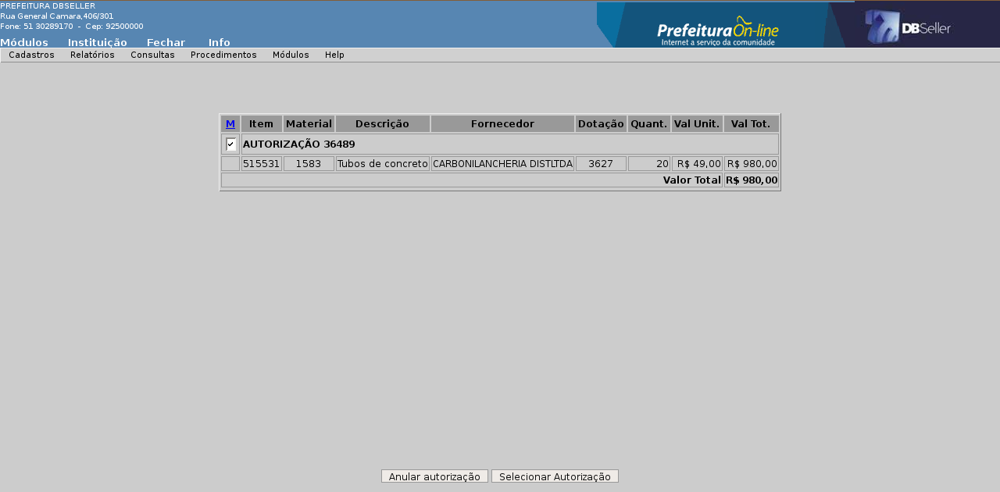
Figura
37
Para proceder a anulação, basta o usuário marcar o checkbox contido ao lado do número da autorização e clicar no botão anular autorização. Feito isso, o sistema remeterá ao usuário a seguinte pergunta, conforme figura 38.
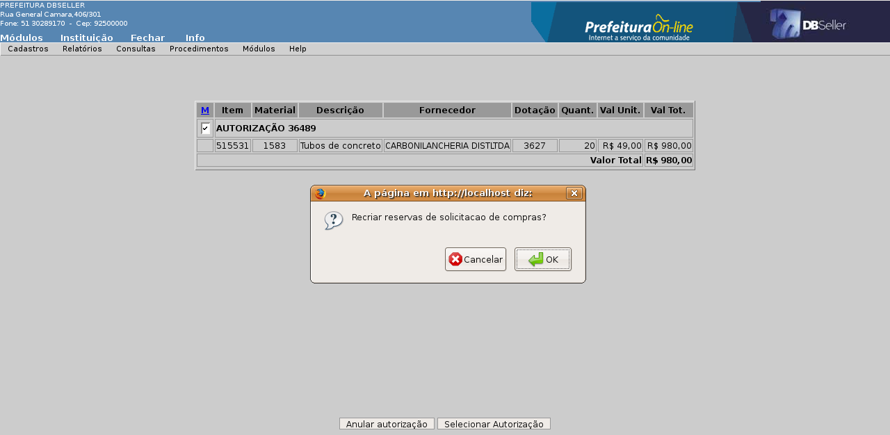
Figura
38
Neste momento, deve o usuário optar em recriar a reserva de dotação orçamentária na solicitação de compras clicando em “ok”, ou deixar de recriá-las, clicando em “cancelar”.
Feito isso, a anulação estará efetivada.
( ver observação * )
( ver observação * )
* observação:
Esta rotina será descrita no Manual do Módulo Compras.
Permite anexar um arquivo no edital de licitação publicado no DBPref.
( ver observação * )
( ver observação * )
* observação:
Esta rotina será descrita no Manual do Módulo Compras.
Procedimento que permite a revogar uma determinada licitação.
Para isso, deve o usuário informar o número da licitação que deseja revogar. Caso desconheça o número, poderá optar em pesquisá-lo através do link licitação, sublinhado.
A figura 39 traz a tela de revogação de uma licitação.
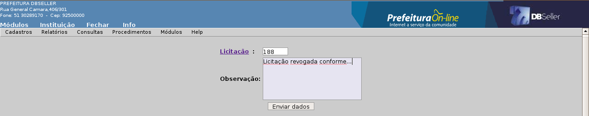
Figura
39
O campo observação é utilizado para justificar o motivo da revogação do certame licitatório. Feito isso, deve o usuário clicar no botão enviar dados.
A figura 40 traz a tela de confirmação da revogação de uma licitação.
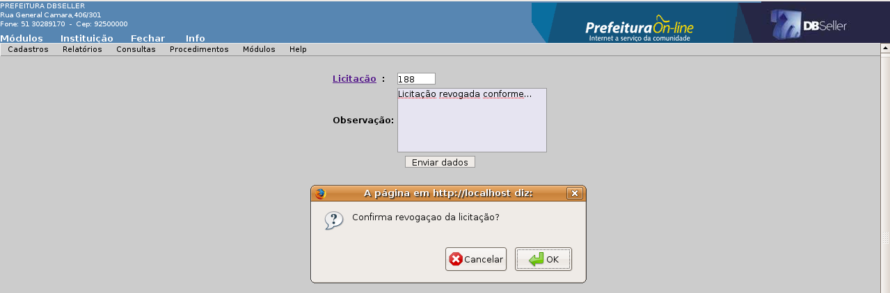
Figura
40
Confirma-se a revogação clicando no botão ok. Para desistir, basta clicar no botão cancelar.
Permite que no momento de se gerar uma autorização de empenho, o usuário o faça por processo de compras. Para isso, o parâmetro deve estar cetado em “sim”.
|
DBSeller Serviços de Informática Ltda. – www.dbseller.com.br Rua General Câmara, 406/301 – Porto Alegre – Fone: (51) 3028-9170 |
|